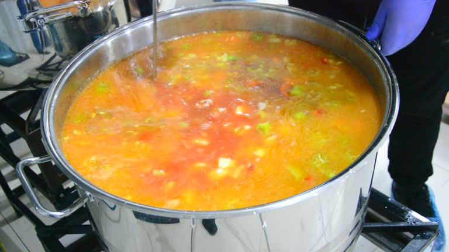

A Week's Worth of Chicken Soup
There's nothing quite like a warm bowl of chicken soup to comfort and nourish. This recipe yields enough for a week's worth of hearty meals, perfect for chilly evenings or when you need a little extra care.

Ingredients
- 1 whole chicken (about 4 pounds)
- Water or Stock, and lots of it
- 4 carrots, peeled and sliced
- 3 celery stalks, sliced
- 1 large onion, chopped
- 6 cloves garlic, minced
- 2 bay leaves
- Salt and pepper to taste
- 2 teaspoon dried thyme
- 2 teaspoon dried parsley
- 2 cup egg noodles or rice (optional)
Instructions
Prep time: 15 minutes
Cook time: 1 hour 30 minutes
- In a large pot, place the whole chicken and cover it with water or stock. Bring to a boil, then reduce to a simmer.
- Add the carrots, celery, onion, garlic, bay leaves, thyme, and parsley. Season with salt and pepper.
- Simmer for about 1 hour, or until the chicken is cooked through and tender.
- Remove the chicken from the pot and let it cool slightly. Shred the meat and discard the bones.
- Return the shredded chicken to the pot. If desired, add egg noodles or rice and cook until tender.
- Adjust seasoning as needed and serve hot. Enjoy your comforting bowl of chicken soup!